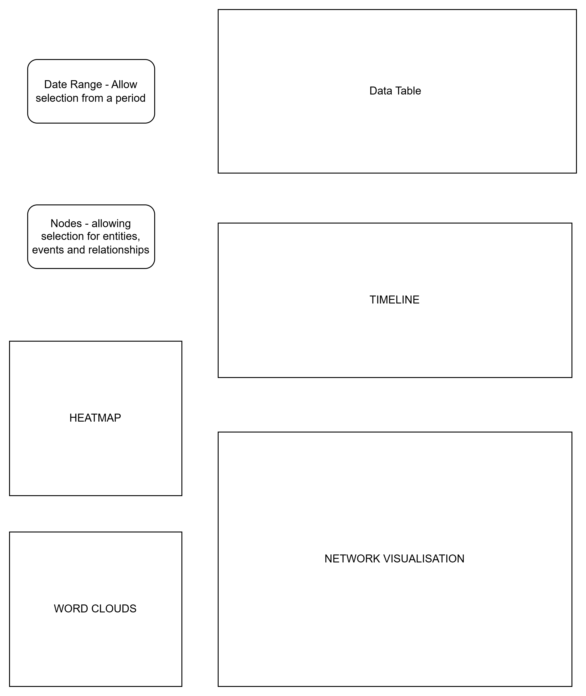
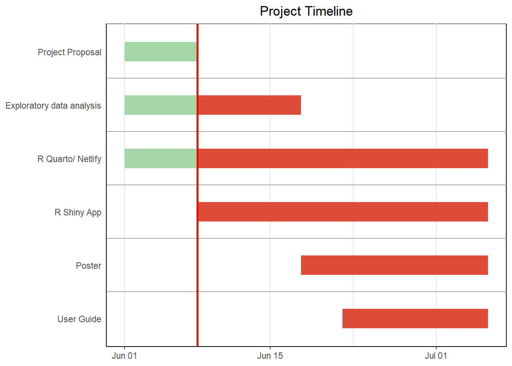

Proposal: Visual Analytics Platform for Investigative Journalism in Oceanus
Challenge: Mini Case Challenge 3 — Visualizing Communications and Influence in Oceanus
We have chosen Mini Case Challenge 3 -Visualizing Communications and Influence in Oceanus and the link to the challenge can be found here.
Detective Who
1. Introduction
The island community of Oceanus is undergoing a period of rapid transformation. As illegal fishing operations are curtailed, new tensions arise in sectors like ocean tourism, especially surrounding high-profile events such as Sailor Shift’s music video shoot. Investigative journalist Clepper Jessen has gathered extensive radio communication data, which now requires advanced visual analysis to uncover hidden dynamics, influence patterns, and potentially illegal behavior.
2. Motivation
Our team is developing an interactive visual analytics platform to support investigative journalist Clepper Jessen in uncovering the hidden dynamics shaping recent events on the island of Oceanus, relating to high-level Oceanus officials, Sailor Shift’s team, local influential families and local conservationist group The Green Guardians. Clepper has intercepted two weeks of radio communications that may reveal corruption, concealed logistics, and resurfacing criminal networks.
The motivation behind our platform is to help Clepper decode this vast and complex web of interactions using a knowledge graph built from communication data. Given the scale and sensitivity of the information, traditional analysis methods are insufficient. Visual analytics offers a powerful means to surface hidden patterns and relationships.
3. Objectives
Key objectives include identifying daily temporal communication patterns and shifts over time, mapping out influence networks of notable figures and organizations, revealing thematic groupings among vessels and individuals, and detecting the use of aliases or pseudonyms—such as “Boss” or “The Lookout.” The platform also investigates the suspected illicit activity of Nadia Conti, a former player in illegal fishing operations.
Main features of the application include an interactive communication timeline, a dynamic knowledge graph explorer, pseudonym detection tools, group discovery based on communication themes, and a dedicated “Nadia Tracker.” These visual tools empower Clepper to trace influence, examine affiliations, and explore the evolving narrative on Oceanus, ultimately helping expose hidden truths and support investigative journalism.
Our goal is to build an interactive visual analytics application that enables:
Exploration of daily communication patterns and their evolution
Investigation of entity influence, focusing on individuals like Nadia Conti
Grouping and clustering of related people and vessels based on interaction and content
Detection and mapping of pseudonyms to their likely real-world identities
Summary of individual activity timelines, particularly those with suspected misconduct
4. Data
The project examines data from The Vast Challenge 2025 the Mini Challenge 3. The dataset contains the 2 weeks of radio intercept by Clepper Jansen to uncover communications between people and organizations in Oceanus. The dataset is a graph network comprised of 1159 nodes and 3226 edges. Each node represents entity (people, organizations or groups), event or relationship, whereas edges represent relationship (i.e. sender and receiver).
5. Methodology
A. Data Preparation
Cleaning and Shaping data for relevant data for analysis
Filtering out relevant nodes into their different entities and relationship: person, vessel, group, relationship, communication and monitoring
Filtering out relevant Edges into their different events: communication, event, relationship
B. Data Exploration and Visualization
Heatmaps: Show message frequency, time-of-day patterns, and shifts over the two-week period.
Timelines: To track specific people and their communication
Word Clouds: To track the most communicated words by person, organisations and vessels
Knowledge graph explorer: Visualize relationships and interactions among nodes (people, vessels, pseudonyms)
Pseudonym Linker: Identify and visualize shared aliases, repeated use, and communication threads.
Influence Mapping: Focused visual breakdown of who influences or communicates with key targets.
Suspect Spotlight: A dedicated visual dashboard summarizing Nadia Conti’s activity, affiliations, and suspicious connections.
6. Prototype Sketches

Our shiny app will focus on timelines and network visualisation graphs, with heatmaps and wordclouds assisting with the interpretation of data.
As we are interested in patterns between the communication, we should be able to filter by date to get a microview on the communication between person, vessels, groups and organisations
Nodes (Entity/Event/Relationship)
This helps to narrow down to the nodes that we are interested in looking at, be it person and relationship or vessels and person, we will be able to select the ones we are interested in and zoom in on the parts.
Heatmaps
Shows the pattern of communication
Timeline
Show the communication between specific suspects
Wordcloud
Show most commonly used words
Network Graphs
Show the relationship and frequency of communication
7. Expected Outcomes
A web-based or R Shiny-powered dashboard that Clepper can use for investigative reporting.
Visual evidence of hidden groupings, influence networks, and potential misconduct.
Improved understanding of communication flows on Oceanus.
A replicable framework for future investigative cases involving communication networks.
Data visualization: plotly, DT, ggplot2, wordcloud
Knowledge graph analysis: igraph, ggraph
9. Project Schedule
Code
pacman::p_load(vistime, ggplot2)data <-read.csv(text="event,group,start,end,color ,Project Proposal,2025-06-01,2025-06-08,#a5d6a7 ,Exploratory data analysis,2025-06-01,2025-06-08,#a5d6a7 ,Exploratory data analysis,2025-06-08,2025-06-18,#DD4B39 ,R Quarto/ Netlify,2025-06-01,2025-06-08,#a5d6a7 ,R Quarto/ Netlify,2025-06-08,2025-07-06,#DD4B39 ,R Shiny App,2025-06-08,2025-07-06,#DD4B39 ,Poster,2025-06-18,2025-07-06,#DD4B39 ,User Guide,2025-06-22,2025-07-06,#DD4B39" )proposal_deadline <-as.Date("2025-06-08") p <-gg_vistime(data, title ="Project Timeline") p +geom_vline(xintercept =as.numeric(as.POSIXct("2025-06-08")), color ="red", size =1)

Source Code
---title: "Project Proposal"author: Celin Liaw, Shermainn Ng, Stefanie Feliciadate: 9 June 2025date-modified: "last-modified"format: html: code-fold: true code-tools: trueexecute: eval: true echo: true warning: false freeze: true---## **Proposal: Visual Analytics Platform for Investigative Journalism in Oceanus**### **Challenge:** Mini Case Challenge 3 — Visualizing Communications and Influence in OceanusWe have chosen Mini Case Challenge 3 -Visualizing Communications and Influence in Oceanus and the [link](https://vast-challenge.github.io/2025/MC3.html) to the challenge can be found here.# Detective Who# **1. Introduction**The island community of Oceanus is undergoing a period of rapid transformation. As illegal fishing operations are curtailed, new tensions arise in sectors like ocean tourism, especially surrounding high-profile events such as Sailor Shift’s music video shoot. Investigative journalist Clepper Jessen has gathered extensive radio communication data, which now requires advanced visual analysis to uncover hidden dynamics, influence patterns, and potentially illegal behavior.# **2. Motivation**Our team is developing an interactive visual analytics platform to support investigative journalist Clepper Jessen in uncovering the hidden dynamics shaping recent events on the island of Oceanus, relating to high-level Oceanus officials, Sailor Shift's team, local influential families and local conservationist group The Green Guardians. Clepper has intercepted two weeks of radio communications that may reveal corruption, concealed logistics, and resurfacing criminal networks.The motivation behind our platform is to help Clepper decode this vast and complex web of interactions using a knowledge graph built from communication data. Given the scale and sensitivity of the information, traditional analysis methods are insufficient. Visual analytics offers a powerful means to surface hidden patterns and relationships.# **3. Objectives**Key objectives include identifying daily temporal communication patterns and shifts over time, mapping out influence networks of notable figures and organizations, revealing thematic groupings among vessels and individuals, and detecting the use of aliases or pseudonyms—such as “Boss” or “The Lookout.” The platform also investigates the suspected illicit activity of Nadia Conti, a former player in illegal fishing operations.Main features of the application include an interactive communication timeline, a dynamic knowledge graph explorer, pseudonym detection tools, group discovery based on communication themes, and a dedicated “Nadia Tracker.” These visual tools empower Clepper to trace influence, examine affiliations, and explore the evolving narrative on Oceanus, ultimately helping expose hidden truths and support investigative journalism.Our goal is to build an interactive visual analytics application that enables:- Exploration of **daily communication patterns** and their evolution- Investigation of **entity influence**, focusing on individuals like Nadia Conti- **Grouping and clustering** of related people and vessels based on interaction and content- **Detection and mapping of pseudonyms** to their likely real-world identities- Summary of **individual activity timelines**, particularly those with suspected misconduct# **4. Data**The project examines data from The Vast Challenge 2025 the <a href ="https://vast-challenge.github.io/2025/MC3.html">Mini Challenge 3</a>. The dataset contains the 2 weeks of radio intercept by Clepper Jansen to uncover communications between people and organizations in Oceanus. The dataset is a graph network comprised of 1159 nodes and 3226 edges. Each node represents entity (people, organizations or groups), event or relationship, whereas edges represent relationship (i.e. sender and receiver).# **5. Methodology****A. Data Preparation**- Cleaning and Shaping data for relevant data for analysis- Filtering out relevant nodes into their different entities and relationship: person, vessel, group, relationship, communication and monitoring- Filtering out relevant Edges into their different events: communication, event, relationship**B. Data Exploration and Visualization**- **Heatmaps**: Show message frequency, time-of-day patterns, and shifts over the two-week period.- **Timelines:** To track specific people and their communication- **Word Clouds:** To track the most communicated words by person, organisations and vessels- **Knowledge graph explorer:** Visualize relationships and interactions among nodes (people, vessels, pseudonyms)- **Pseudonym Linker**: Identify and visualize shared aliases, repeated use, and communication threads.- **Influence Mapping**: Focused visual breakdown of who influences or communicates with key targets.- **Suspect Spotlight**: A dedicated visual dashboard summarizing Nadia Conti’s activity, affiliations, and suspicious connections.# **6. Prototype Sketches**Our shiny app will focus on timelines and network visualisation graphs, with heatmaps and wordclouds assisting with the interpretation of data.::: panel-tabset### InputsThe Shiny app with have 2 main inputs:**Date**As we are interested in patterns between the communication, we should be able to filter by date to get a microview on the communication between person, vessels, groups and organisations**Nodes (Entity/Event/Relationship)**This helps to narrow down to the nodes that we are interested in looking at, be it person and relationship or vessels and person, we will be able to select the ones we are interested in and zoom in on the parts.### Outputs**Heatmaps**Shows the pattern of communication**Timeline**Show the communication between specific suspects**Wordcloud**Show most commonly used words**Network Graphs**Show the relationship and frequency of communication:::# **7. Expected Outcomes**- A web-based or R Shiny-powered dashboard that Clepper can use for investigative reporting.- Visual evidence of hidden groupings, influence networks, and potential misconduct.- Improved understanding of communication flows on Oceanus.- A replicable framework for future investigative cases involving communication networks.# **8. R Packages**- R, tidygraph, ggraph, visNetwork, Shiny, dplyr, rcolorbrewer- Text processing: `stringr`, `tidytext, tidyr`- Data visualization: `plotly`, `DT`, `ggplot2, wordcloud`- Knowledge graph analysis: `igraph`, `ggraph`# **9. Project Schedule**```{r}pacman::p_load(vistime, ggplot2)data <-read.csv(text="event,group,start,end,color ,Project Proposal,2025-06-01,2025-06-08,#a5d6a7 ,Exploratory data analysis,2025-06-01,2025-06-08,#a5d6a7 ,Exploratory data analysis,2025-06-08,2025-06-18,#DD4B39 ,R Quarto/ Netlify,2025-06-01,2025-06-08,#a5d6a7 ,R Quarto/ Netlify,2025-06-08,2025-07-06,#DD4B39 ,R Shiny App,2025-06-08,2025-07-06,#DD4B39 ,Poster,2025-06-18,2025-07-06,#DD4B39 ,User Guide,2025-06-22,2025-07-06,#DD4B39" )proposal_deadline <-as.Date("2025-06-08") p <-gg_vistime(data, title ="Project Timeline") p +geom_vline(xintercept =as.numeric(as.POSIXct("2025-06-08")), color ="red", size =1)```